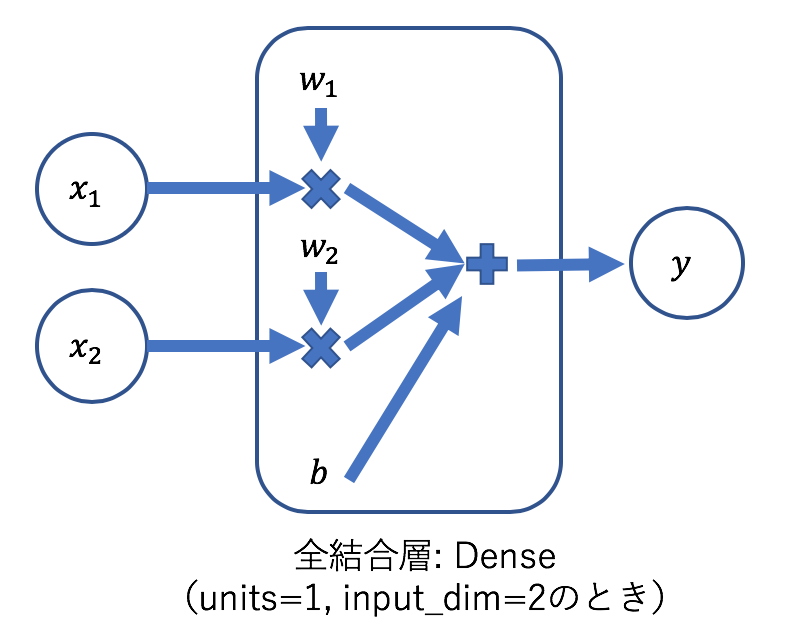

ゼロから作るDeep Learningとともに学ぶフレームワーク（パーセプトロン編）
はじめに
「ゼロから作るディープラーニング」は深層学習を学ぶ入門書として非常に人気があり，様々な場所で用いられています．
しかしながら，「フレームワークを用いないで深層学習の基礎を学ぶ」という本の目的により，深層学習フレームワークに関する内容は触れられていません．
したがって，読者の中には実際のフレームワークを用いた機械学習の勉強へと繋げる機会や気力を失ってしまった人も少なからずいると思います．
このプロジェクトでは，「ゼロから作るDeep Learning」（以下，ゼロから〜）を学習しつつ，深層学習フレームワークの一つである，Kerasについて学んでいきます．
これにより，深層学習の基礎を理解しつつ，フレームワークを活用した実装方法について学ぶことができます！
それでは，まずはKerasのインストールから始めていきましょう．
1. Kerasのインストール
(注意) 本プロジェクトでは，すでにPythonやNumPy等のインストールは終えているものとしてスタートします．
環境整備がお済みでない方は，先にゼロから〜の一章を参考に済ませてください．
・コマンドライン上で，以下のコマンドを入力してKerasをインストールします．
pip install keras
2. プロジェクトの作成
お好きな環境でゼロから〜二章用のプロジェクトを作成してください．
ただし，ここでは，sequential.pyとfunctional.pyの二つのファイルを作成することとします．
3. モデルの作成 & テスト
- KerasにはSepuentialモデルとFunctional APIの2種類のモデルの定義方法があります．
- Sepuentialモデル：様々な層を積み木のように積み重ねていくイメージ．線形スタック．
- Functionalモデル：層をインスタンスとして扱う．複雑なモデルを定義するときに便利．
それぞれのモデルの定義方法の違いを以下で見ていきましょう．
3.1 Sequential モデル
- SequentialモデルでANDゲートのパーセプトロンを実装します．
sequential.pyに以下のソースを順に書いていきましょう．
1. レイヤー + NumPyを読み込む
from keras.models import Sequential
from keras.layers import Dense
import numpy as np
2. modelにSepuentialモデルを定義する
model = Sequential()
3. modelにDense層（全結合層）を追加する
model.add(Dense(input_dim=2, units=1))
- 全結合層という用語はゼロから〜の二章には登場していませんが，ここでは単純パーセプトロンと同じと思ってください．
参考程度に，input_dim=2, units=1のときのDense層の様子を概念図にしたものを以下に示します．

4. modelに重みを与える
-
ゼロから〜の二章では予め重みとバイアスが与えられているので，この実装でも与えます．
-
重みとバイアスの初期設定には，
model.set_weights()を使用します．
引数は重みの入ったリストです．model.set_weights([np.array([[0.5], [0.5]]), np.array([-0.7])])参照: ゼロから〜のP27
5. テストする
- モデルのテストは
predictメソッドで行えます．
predictの返り値は，入力データの予測結果のリストになっています．
X = np.array([[0,0], [0,1], [1,0], [1,1]])
Y = np.array([[0], [0], [0], [1]])
Y_ = model.predict(X)
print(Y_)
- この結果は以下のようになるはずです．
Output:[[-0.7 ] [-0.19999999] [-0.19999999] [ 0.3 ]] - これではわかりにくいので，マイナスのものは
Falseで，プラスのものはTrueに置き換えます．Y_[Y_ <= 0] = False Y_[Y_ > 0] = True print(Y_) print(f'Results: {Y == Y_}') - 以下のような結果が得られたと思います．
見事ANDゲートが実装できていることが確認できますね．
Output:[[0.] [0.] [0.] [1.]] Results: [[ True] [ True] [ True] [ True]]
3.2 Fucntional API
- Functional APIでANDゲートのパーセプトロンを実装します．
functional.pyに以下のソースを順に書いていきましょう．
1. レイヤー + NumPyを読み込む
from keras import Model
from keras.layers import Input, Dense
import numpy as np
2. 各種レイヤーを定義する
Functional APIでは，入力層を追加で定義する必要があります．
Dense部分のイメージとしては，Denseレイヤーのインスタンスを生成し，その入力として，テンソル：_inputを与えるという感じです．出力のテンソルは_outputとなります．
_input = Input(shape=(2, ))
_output = Dense(units=1)(_input)
3. モデルを定義する
以下のように，Functional APIでは，モデルを定義する際に入力と出力のテンソルを別々に保持しておく必要があります！
model = Model(inputs=_input, outputs=_output)
参考: https://keras.io/ja/getting-started/functional-api-guide/
4. 重みを与える & テストする
Sequentialモデルと同じなので割愛します．
結果が同一になることを確認するとよいです．
まとめ
今回は，パーセプトロンによるANDゲートの実装をKerasにより行いました．
Kerasを用いることで，より「簡単に&抽象的に」パーセプトロンを実装することが確認できたと思います．
次回は，3層ニューラルネットワークの実装を行います．
発展課題
NAND, ORゲートも実装してみると良いでしょう．
重みとバイアスは，ゼロから〜のP27,28を参照してください．
ソースコード
ソースコードは，GitHubで5月中に入手できるようにする予定です．